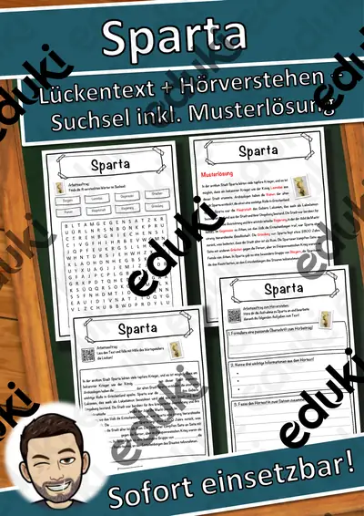
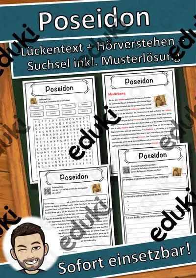

Antikes Griechenland: Arbeitsblätter für Klasse 5–7 (Geschichte)
Die griechische Antike steht am Beginn vieler Geschichtslehrpläne in der Sekundarstufe I. Im Fokus stehen Stadtstaaten, Götterwelt, Olympische Spiele und die Anfänge der Demokratie.
Als roter Faden eignen sich Polis, Götter des Olymp und Olympische Spiele; Demokratie in Athen, Sparta und Philosophie lassen sich je nach Klassenstufe zuschalten.
Wo genau im Lehrplan das Thema steht, unterscheidet sich von Land zu Land, häufig im Fach Geschichte in der Sekundarstufe I (Klasse 5–7). Gemeinsames Ziel: die Schülerinnen und Schüler vergleichen Athen und Sparta und erklären die Anfänge der Demokratie.
Eine Reihe zu Antikes Griechenland lässt sich so gliedern: erst Polis erarbeiten, dann Götter des Olymp anwenden, später Demokratie in Athen und Sparta vertiefen. Zu jedem Material gehört eine Musterlösung, die Korrektur und Selbstkontrolle erleichtert. Zur Differenzierung eignen sich die Lesespurgeschichten mit ihren drei Niveaustufen.
Zum Thema finden Sie 33 Materialien, unter anderem Persönlichkeiten-Werkstatt: Zeus, Materialpaket Griechische Götter und Kunst der Antike, verteilt auf 4 Lesespurgeschichten und 27 Lückentexte mit Hörverstehen in Klasse 4–8. Ein Götter-Quartett, das die Klasse selbst gestaltet, festigt Namen und Zuständigkeiten.
Das gehört zum Thema
Passende Arbeitsblätter und Materialpakete

Materialpaket Griechische Götter - Lückentexte mit Wortspeicher, Plakate und Ausmalbilder

Persönlichkeiten-Werkstatt: Zeus – Plus-Paket mit Texten in 3 Stufen, Quiz und Aktion, Klasse 3–4

Kunst der Antike – Vasen und Tempel – Lesespurgeschichte mit Rätselaufgaben (Klasse 6)

Olympia in der Antike – Lesespurgeschichte mit Rätselaufgaben (Klasse 7)

Das antike Rom – die Republik – Lesespurgeschichte mit Rätselaufgaben (Klasse 7)

Die Mission auf dem Olymp – Lesespurgeschichte mit Rätselaufgaben (Klasse 6)

Sparta Lückentext mit Wortspeicher Hörverstehen und Suchsel

Poseidon Lückentext mit Wortspeicher Hörverstehen und Suchsel

Zeus Lückentext mit Wortspeicher Hörverstehen und Suchsel

Philosophie Lückentext mit Wortspeicher Hörverstehen und Suchsel

Olympische Spiele Lückentext mit Wortspeicher Hörverstehen und Suchsel

Hera Lückentext mit Wortspeicher Hörverstehen und Suchsel

Griechische Götter Lückentext mit Wortspeicher Hörverstehen und Suchsel

Hades Lückentext mit Wortspeicher Hörverstehen und Suchsel

Athene Lückentext mit Wortspeicher Hörverstehen und Suchsel

Athen Lückentext mit Wortspeicher Hörverstehen und Suchsel

Ares Lückentext mit Wortspeicher Hörverstehen und Suchsel

Aphrodite Lückentext mit Wortspeicher Hörverstehen und Suchsel

Apollo 11 Lückentext mit Wortspeicher Hörverstehen und Suchsel

Artemis - Griechische Götter - Lückentext mit Wortspeicher

Hestia - Griechische Götter - Lückentext mit Wortspeicher

Zeus - Griechische Götter - Lückentext mit Wortspeicher

Poseidon - Griechische Götter - Lückentext mit Wortspeicher

Hermes - Griechische Götter - Lückentext mit Wortspeicher
Weitere 9 Materialien zum Thema im Material-Finder.
Häufige Fragen
Für welche Klassenstufe passen die Arbeitsblätter zu Antikes Griechenland?
Passend sind Klasse 4–8. Von den 33 Titeln wenden sich die meisten an Klasse 6, einige lassen sich differenzierend auch in benachbarten Stufen nutzen.
Welche Inhalte decken die Materialien zu Antikes Griechenland ab?
Behandelt werden unter anderem Polis, Götter des Olymp, Olympische Spiele und Demokratie in Athen. Welche Aspekte in Ihrer Klasse Vorrang haben, richtet sich nach dem Lehrplan Ihres Bundeslandes.
Wie setze ich Antikes Griechenland im Unterricht ein?
Ein Götter-Quartett, das die Klasse selbst gestaltet, festigt Namen und Zuständigkeiten. So entsteht aus den Blättern eine kleine Einheit, die sich auf zwei bis drei Stunden verteilen lässt.
Mehr Material nach Fach und Klasse
Verwandte Lehrplanthemen
- Das alte Ägypten (Geschichte, Klasse 4–7)
- Mittelalter, Ritter und Burgen (Geschichte, Klasse 4–8)
- Römisches Reich (Geschichte, Klasse 5–7)
- Französische Revolution und Aufklärung (Geschichte, Klasse 8–10)
- Industrialisierung (Geschichte, Klasse 8–10)